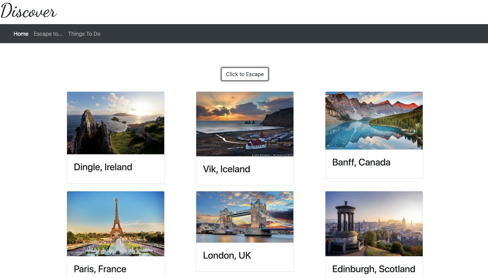

Card Looping
In this application, click my 'Esacpe to...' button to generate divs of images to far away places.

jQuery Badges Project
In this application, I display the course badges I earned from CodeSchool using AJAX.